CellTracker System
Plataforma Modular de Segmentación y Conteo Celular basada en Visión por Computador e Inteligencia Artificial (YOLOv8-seg)
⚠️ Reto Experimental
La cuantificación manual de cultivos celulares presenta múltiples dificultades en el entorno de laboratorio:
- Diferenciación Visual: Dificultad para distinguir subtipos celulares con morfologías similares en microscopía de campo claro.
- Volumen de Datos: Los experimentos de timelapse generan miles de imágenes imposibles de procesar manualmente.
- Reproducibilidad: El conteo manual introduce variabilidad intra e inter-observador.
✅ Solución CellTracker
Un sistema integral que combina:
- Deep Learning (YOLOv8): Para segmentación semántica de instancias robusta frente a ruido y artefactos.
- Clasificación Dual: Distinción automática entre `celula_negra` (Clase 0) y `celula_blanca` (Clase 1) con visualización coloreada.
- Arquitectura Modular: Separación limpia entre entrenamiento, inferencia y análisis.
El proyecto sigue una arquitectura de diseño modular para maximizar la mantenibilidad y escalabilidad. A continuación, se detalla el árbol de directorios completo:
- Entrada: Imágenes de microscopía.
- Herramienta: LabelMe para generar polígonos JSON.
- Proceso: Script
dataset_preparation.pyconvierte JSONs a formato YOLO-SEG (coordenadas normalizadas). - Split: División automática en Train (80%), Val (10%), Test (10%).
- Modelo Base:
yolov8n-seg.pt(Nano) para velocidad o superior para precisión. - Config: Definida en
dataset_config.yaml(rutas y nombres de clases). - Hiperparámetros: Épocas, Batch Size, Image Size (typ. 1024px).
- Output: Pesos optimizados (
best.pt) guardados enmodels/trained/.
- Carga del modelo entrenado.
- Predicción sobre nuevas imágenes no vistas.
- Generación de máscaras binarias para cada instancia detectada.
- Extracción de contornos con OpenCV (
cv2.findContours). - Código de Color:
- Clase 0 (`celula_negra`): Contorno BLANCO (RGB 255,255,255).
- Clase 1 (`celula_blanca`): Contorno VERDE (RGB 0,255,0).
- Exportación de imagen final y CSV de conteo.
1. Entrenamiento de IA Personalizado
El módulo de entrenamiento permite al investigador adaptar el sistema a tipos celulares específicos mediante un flujo guiado y robusto:
- Configuración del Entorno: Verificación automática de dependencias (Python/Anaconda) y creación de estructuras de carpetas aisladas para cada experimento.
- Etiquetado Asistido: Integración fluida con herramientas de anotación. El usuario define el número de células a rastrear y utiliza guías visuales (Apple-style) para rodear las células de interés.
- Aseguramiento de Calidad (QA):
- Verificación de integridad de archivos JSON generados.
- Detección automática de datos corruptos y herramientas de reconstrucción de dataset.
- Configuración granular de características del dataset antes del procesamiento.
- Generación del Modelo: Input de parámetros de entrenamiento y ejecución
automatizada que resulta en un archivo de pesos optimizado
best.pt.
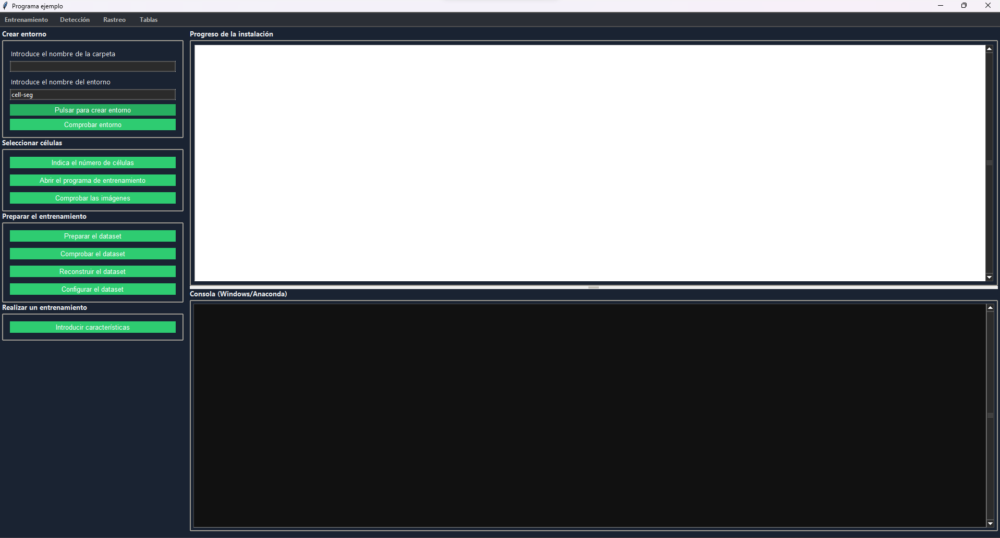
Fig 1. Panel de configuración y preparación del dataset.
2. Detección y Análisis Avanzado
El núcleo de inferencia ofrece herramientas potentes para la segmentación precisa y el análisis cuantitativo. La interfaz se divide en módulos especializados que otorgan al usuario control total sobre el proceso.
Vista General del Workspace
La clase principal PantallaComparacion orquesta la interfaz, dividiendo el flujo
en
tres paneles lógicos: parámetros (izquierda), viewport (centro) y resultados (derecha).
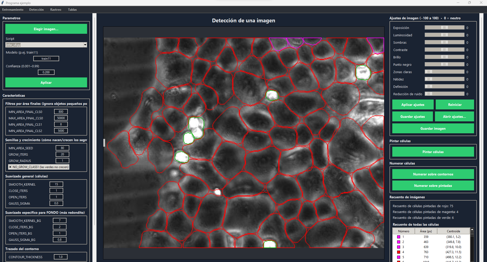
Fig 2.0. Interfaz general de detección.
2.1. Backend de Inferencia y "Script Injection"
La función core ejecutar_inferencia_imagen no solo llama al modelo YOLOv8, sino
que
orquesta un entorno de ejecución aislado mediante subprocess.
Para permitir la modificación de parámetros morfológicos (Area, Growth, Smooth) sin alterar
el
código fuente, el sistema utiliza una técnica de Inyección de Script
Dinámica:
- Generación de Overrides (`crear_script_temporal_con_overrides`):
Antes de cada inferencia, el sistema lee el script base (e.g.,
infer_v3.py) y utiliza Expresiones Regulares (Regex) para sustituir al vuelo las constantes del diccionarioCARACS_DEFAULTSpor los valores de la UI. Se genera un archivo temporal.tmp.pyque es el que realmente se ejecuta. - Aislamiento de Procesos:
La inferencia corre en un proceso hijo independiente con
subprocess.Popen(orunpyen versión congelada), pasando argumentos críticos por CLI:--conf {0.001-0.99},--imgsz 1280, y--weights best.pt. - Gestión de Hilos (Threading): Para evitar congelar la interfaz Tkinter durante el forward pass (que puede tardar segundos en CPU), toda la llamada al backend se encapsula en un hilo demonio asíncrono.
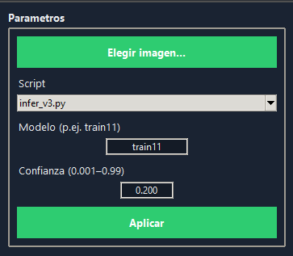
Fig 2.1. Panel de configuración con inyección de parámetros en tiempo real.
2.2. Post-Procesamiento Morfológico Avanzado
El motor de post-procesado refina las máscaras binarias crudas generadas por YOLOv8 para garantizar contornos biológicamente plausibles. Este paso es fundamental para corregir la segmentación de citoplasmas irregulares y eliminar falsos positivos. El sistema utiliza un pipeline de operaciones morfológicas secuenciales configurables:
- Filtrado Dimensional Inteligente:
Se aplican umbrales estrictos para descartar artefactos no celulares.
MIN_AREA_FINAL_CLS0(Def: 800px): Descarta debris o suciedad menor al núcleo de una célula negra.MAX_AREA_FINAL_CLS0(Def: 50000px): Elimina grandes manchas de cultivo o artefactos de iluminación.MIN_AREA_FINAL_CLS1(Def: 8px): Umbral específico para células blancas pequeñas/brillantes.
- Algoritmo de Crecimiento de Semillas (Seed Growing):
Debido a que YOLO detecta mejor el núcleo denso que el citoplasma difuso,
implementamos un algoritmo iterativo:
- Identifica "semillas" de alta confianza (
MIN_AREA_SEED=80). - Expande la máscara radialmente durante
GROW_ITERS(20 ciclos) con un radio deGROW_RADIUS(1px). - Esto permite "rellenar" la forma de la célula hasta sus bordes reales sin fusionarse con vecinas.
- Identifica "semillas" de alta confianza (
- Suavizado de Contornos (Smoothing):
Para evitar bordes pixelados ("efecto sierra"), se aplica un kernel de suavizado
(
SMOOTH_KERNEL=15) seguido de operaciones de Cierre (`CLOSE_ITERS`) para rellenar huecos internos en la máscara.
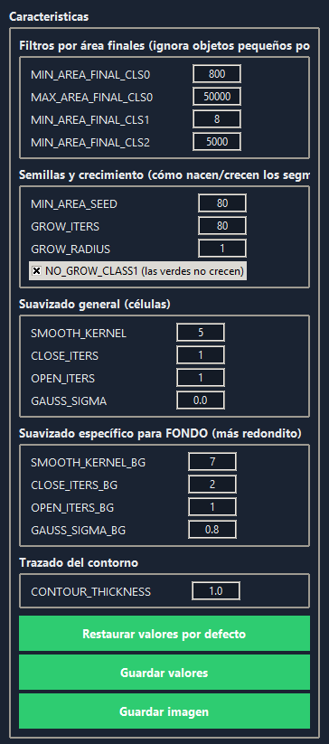
Fig 2.2. Panel de control de constantes morfológicas en deteccion.py.
2.3. Motor de Pre-Procesamiento y Edición de Imagen
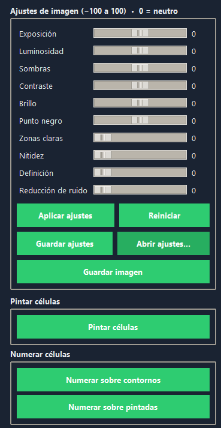
Fig 2.3. Sliders de normalización de imagen (-100 a +100).
Antes de pasar la imagen por la red neuronal, es crucial normalizar el histograma
para
maximizar el contraste entre célula y fondo.
El módulo image_editor.py proporciona un laboratorio fotográfico no
destructivo integrado en el pipeline de inferencia.
Los ajustes se aplican en tiempo real sobre el buffer de memoria, sin alterar el
archivo
original en disco.
- Corrección Tonal (Rango Dinámico):
- Exposición y Brillo: Compensa imágenes subexpuestas típicas en microscopía de campo claro con baja luz.
- Contraste y Punto Negro: Aumenta la separación entre el fondo grisáceo y las membranas celulares oscuras, facilitando la detección de bordes.
- Mejora de Detalles (Frecuencias Altas):
- Nitidez (Sharpness): Aplica máscaras de enfoque para resaltar los límites celulares difusos.
- Definición (Clarity): Aumenta el contraste local (mid-tone contrast) para revelar estructuras internas sin quemar las altas luces.
- Reducción de Ruido:
El slider de
reduccion_ruidoaplica filtros de suavizado preservador de bordes (como Bilateral Filter) para eliminar el granulado ISO de la cámara que podría confundirse con células pequeñas (clase 1).
2.4. Sistema de Visualización y State Machine
El layout central (PantallaComparacion) no es un simple visor estático, sino
una
máquina de estados compleja que gestiona múltiples capas de información (`view_mode`).
Implementa una herramienta de comparación tipo "Wiper" (deslizante) gestionada por la
función
_redibujar(), que mezcla en tiempo real el buffer de entrada (`st["in"]`) con
el de
salida (`st["out"]`) basándose en la posición del slider (0.0 a 1.0).
- Modos de Visualización (`view_mode`):
Controlados dinámicamente desde el panel lateral (
_set_view_mode):contour: Muestra solo los polígonos vectoriales (útil para revisar precisión de bordes).painted: Carga los assets deoutputs/colouredpara un relleno semántico sólido (Verde/Magenta).num_contour/num_painted: Superpone IDs únicos generados post-conteo (e.g.#243) para trazabilidad.
- Navegación Vectorial:
El canvas soporta Zoom & Pan nativo (`_zoom_steps`,
`
`), permitiendo al usuario inspeccionar detalles sub-celulares sin pérdida de calidad de renderizado.
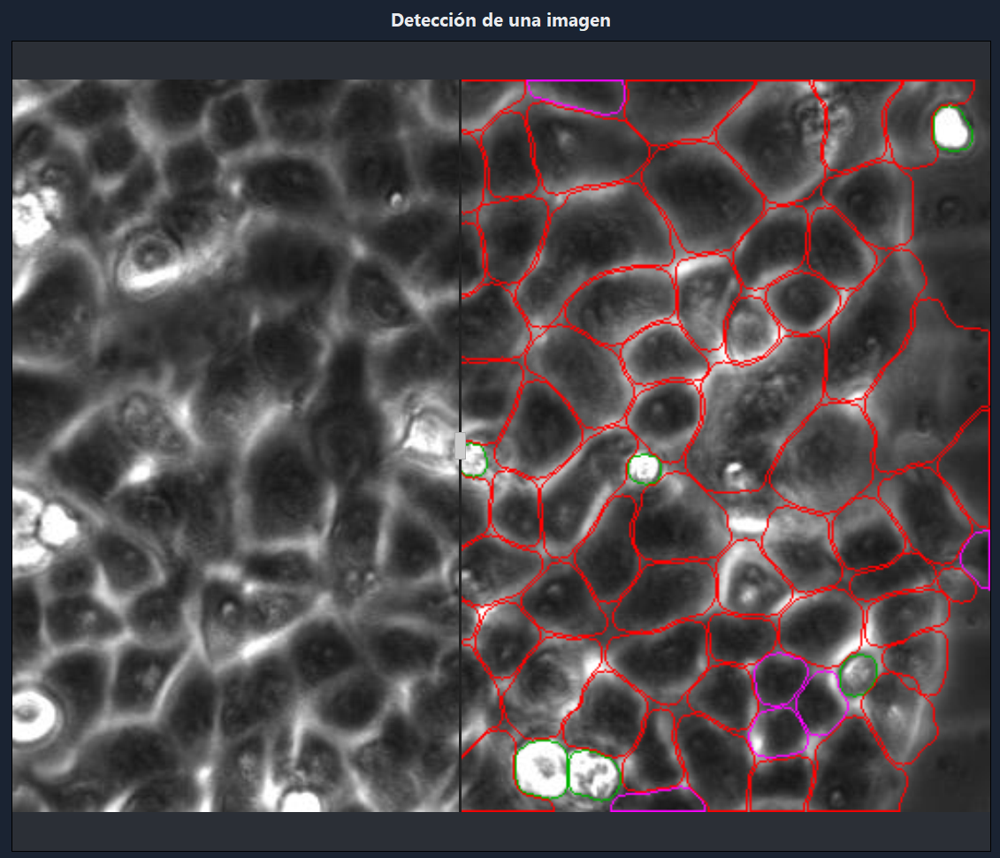
Fig 2.4. Comparativa de modos de visualización (Contornos vs. Máscaras).
2.5. Métricas y Cuantificación (CLI Parsing)
Para garantizar la reproducibilidad científica, el recuento no se realiza en la UI, sino
delegando la tarea a un script CLI robusto (cell_counter.py).
La interfaz captura el `stdout` de este proceso asíncrono y parsea los resultados mediante
Regex
para poblar la UI:
- Regex Parsing:
Se buscan patrones robustos como
r"C[eé]lulas negras .*?:\s*(\d+)"para extraer conteos fenotípicos fiables independientemente del idioma del sistema o encoding. - Componente `ttk.Treeview`:
Los datos detallados de cada instancia (Área en px, Coordenadas X,Y) se vierten en una
tabla
interactiva.
Esta tabla implementa una función de limpieza
_ensure_rowsy un sistema de Renderizado Diferido para manejar miles de filas sin congelar el scroll. - Trazabilidad Cruzada: Cada fila de la tabla está vinculada al ID único de la célula. Al seleccionar una fila, el visor salta automáticamente a esa célula (Cross-Highlighting).
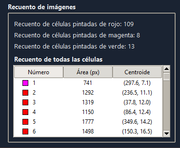
Fig 2.5. Tabla de métricas y resultados por instancia.
3. Procesamiento por Lotes y Secuencias
Para experimentos High-Throughput, el sistema implementa un controlador específico
en
deteccion_secuencia.py.
A diferencia del modo "Single Image" (`deteccion.py`), este módulo gestiona colas de
archivos y
añade componentes de navegación masiva.
3.1. Arquitectura de UI "Responsive" (Pseudo-Asíncrona)
El procesamiento de carpetas completas (centenas de imágenes) presenta el reto de no congelar la interfaz (GUI blocking) durante la ejecución. En lugar de un complejo sistema de Multi-Threading que podría causar Race Conditions con Tkinter, se implementó un bucle de eventos optimizado:
- Bucle con `update_idletasks`:
La función
guardar_carpetaitera sobre la lista de archivos de forma síncrona pero fuerza el refresco de la UI en cada ciclo. Esto permite que la barra de progreso (ttk.Progressbar) y el diálogo modal se rendericen suavemente sin necesidad de hilos paralelos. - Manejo de Excepciones Atómico:
Cada iteración está encapsulada en un bloque
try/exceptindividual. Si una imagen está corrupta, el error se captura, se registra en una lista de fallos (fail.append), y el bucle continúa con la siguiente muestra.
3.2. Navegación Visual y `BottomSequenceDrawer`
Se ha desarrollado un componente personalizado, BottomSequenceDrawer,
para
la gestión visual de los datasets:
- Ordenamiento Natural (`natural_key`):
Implementa lógica de ordenación humana (
img2.pngantes queimg10.png), resolviendo el problema del ordenamiento ASCII estándar que listaría1, 10, 2. - Galería de Miniaturas (Lazy Loading): Un panel inferior deslizante muestra thumbnails generados al vuelo. Permite la selección rápida de cualquier frame de la secuencia para inspección individual.
- Persistencia de Contexto: Al cambiar de imagen en la secuencia, se preservan todos los parámetros morfológicos y ajustes de edición, garantizando la consistencia del análisis en todo el lote.
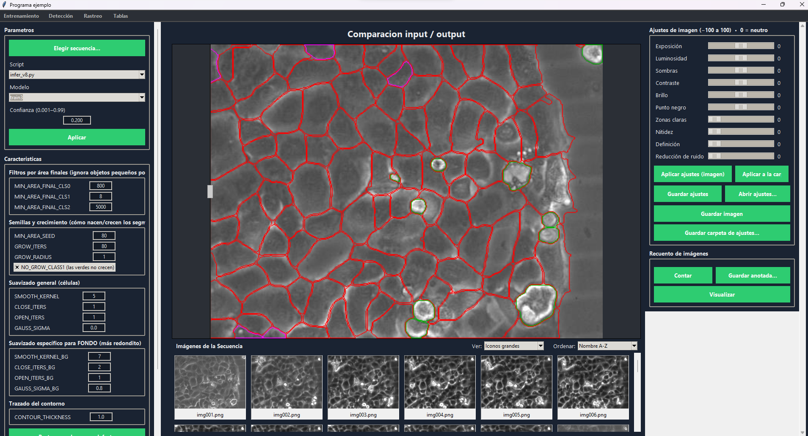
Fig 3.1. Drawer inferior navegando una secuencia de time-lapse.
El módulo de rastreo (app.utils.tracker) permite la reconstrucción de linajes
celulares a través del tiempo.
A continuación se detalla el flujo de operación de la interfaz PantallaComparacion,
paso a paso.
4.1. Interfaz de Rastreo de Imágenes (PantallaComparacion)
El módulo de rastreo, encapsulado en la clase PantallaComparacion
(app/ui/rastreo.py), gestiona la visualización concurrente de dos estados
temporales ($T_0$ y $T_1$).
La arquitectura de la UI se basa en un contenedor `tk.PanedWindow` con un Canvas central de
renderizado de alto rendimiento.
Selector de Carga (Figura 4.0):
La entrada principal se gestiona mediante el botón "Elegir imagen", vinculado al método
_go_detectar_imagen.
Al seleccionar el par de imágenes, el sistema invoca
_cargar_imagenes(in_path, out_path), que inicializa la estructura de datos
interna:
una lista de diccionarios de estado self.imagenes = [st0, st1]. Cada
diccionario `st` almacena:
in_full (imagen original en RAM), out_full (máscara de
segmentación), out_path (ruta al filesystem), y flags de estado como
needs_rescale.
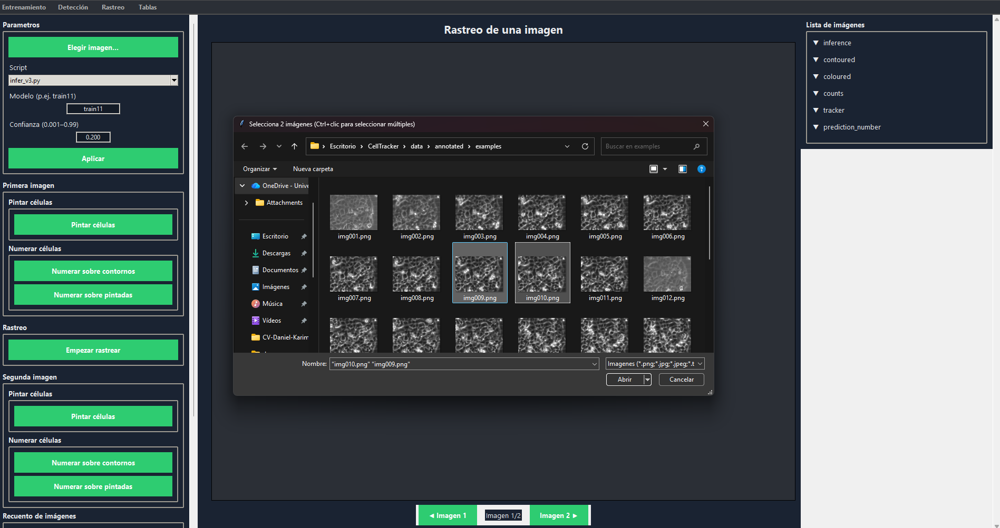
Fig 4.0. Vista general de la interfaz `PantallaComparacion` inicializada.
Gestión de Paneles (Figura 4.1):
Para maximizar el área de trabajo, los paneles laterales implementan un mecanismo de colapso
dinámico (Drawers).
Las funciones toggle_left_drawer y toggle_right_drawer manipulan
la anchura del frame (`config(width=target)`) entre las constantes
WIDTH_OPEN (380px) y WIDTH_CLOSED (28px). Esto permite al usuario
centrarse en la validación visual sin perder acceso a los controles.
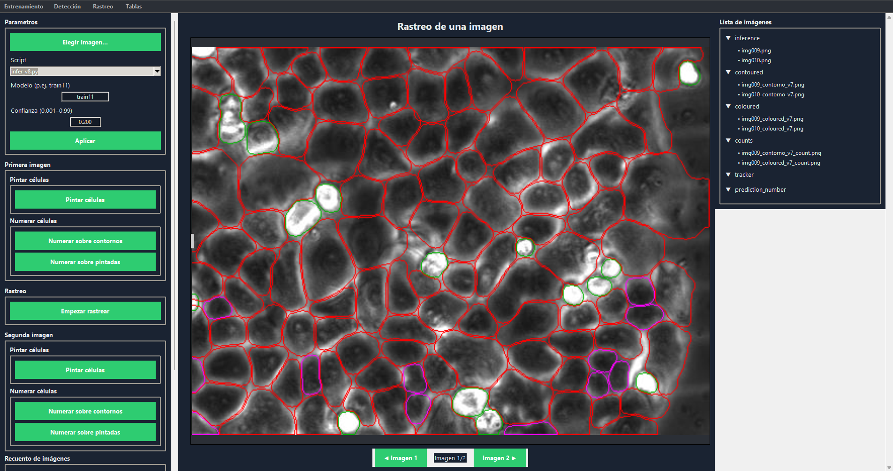
Fig 4.1. Controles de carga y gestión de Drawers laterales.
4.2. Árbol de Activos y Lógica de Gatekeeping
Jerarquía de Archivos (Figura 4.2):
El panel derecho aloja un `ttk.Treeview` que refleja el estado del directorio de proyecto.
Al cargar las imágenes, el método _actualizar_recuento_desde_json intenta
parsear los reportes de conteo asociados.
Es crucial notar la asimetría temporal:
- Imagen 1 ($T_0$): Al ser la base, su conteo es estático y se carga inmediatamente tras la inferencia.
- Imagen 2 ($T_1$): Su identidad celular depende del rastreo. Por tanto, antes de ejecutar el algoritmo de tracking, sus metadatos de "conteo" son inexistentes o nulos.
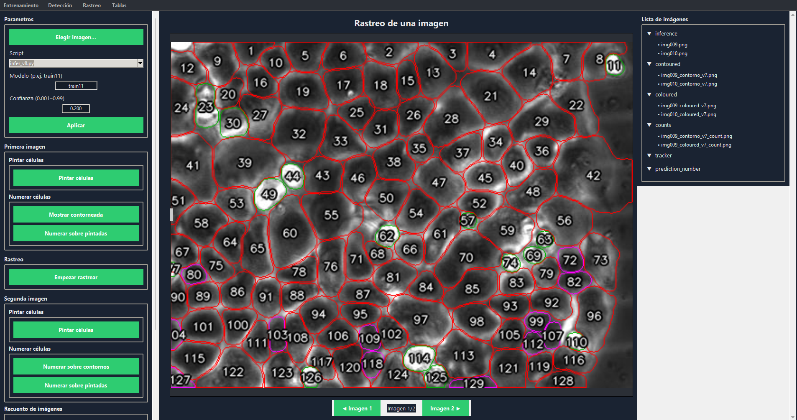
Fig 4.2. Árbol de archivos: Note la ausencia de datos numéricos para T1 (segunda imagen).
Sistema de Prevención de Errores (Gatekeeper) (Figura 4.3):
La integridad del pipeline se asegura mediante validaciones estrictas en los manejadores de
eventos.
Específicamente, el método numerar_sobre_contornos_segunda (Línea 1195 de
`rastreo.py`) actúa como guardián.
Cuando el usuario intenta activar la visualización de IDs en la segunda imagen (modos
num_contour o num_painted),
la función verifica la existencia del archivo JSON de predicción reescrito
(`_reescrito.json`).
Si el rastreo no se ha ejecutado (empezar_rastrear no ha sido invocado), el
sistema intercepta la llamada y despliega un messagebox.showwarning.
Esto previene excepciones de "Archivo no encontrado" y guía al usuario hacia el flujo
correcto: primero rastrear, luego visualizar.
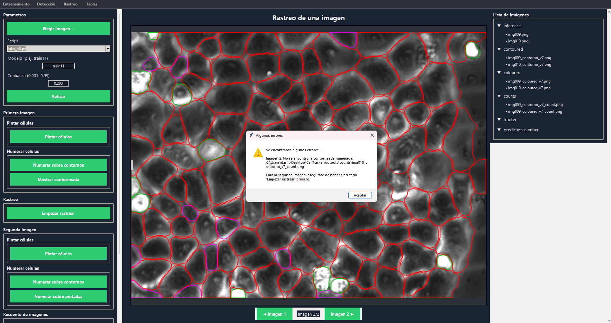
Fig 4.3. Excepción de flujo controlada: Intento de acceso a datos no computados.
4.3. Parametrización y Ejecución del Algoritmo
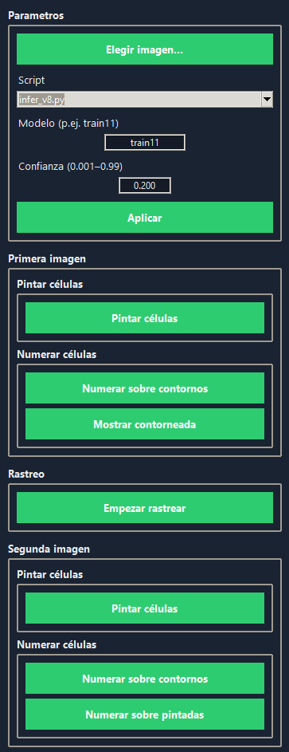
Fig 4.4. Configuración.
Lógica de Botones y Estados de Visualización:
La barra de parámetros (Figura 4.4) también alberga los controles de
visualización ("Pintar", "Numerar").
Aquí reside una diferencia crítica de software:
- Primera Imagen ($T_0$): Los botones
pintar_celulasynumerar_sobre_contornosfuncionan inmediatamente tras la carga, ya que la inferencia base genera los activos `_coloured.png` y `_count.png` de forma síncrona. - Segunda Imagen ($T_1$): Los botones equivalentes (e.g.,
numerar_sobre_contornos_segunda) están bloqueados lógicamente. Si se pulsan antes del rastreo, el método_set_view_modefallará controladamente al buscar enoutputs/counts/. Solo tras ejecutarempezar_rastrear, que genera los archivos_contorno_v7_count.pngcon IDs propagados, estos botones se vuelven funcionales.
Este comportamiento no es un error, sino una consecuencia directa de la arquitectura de dependencia de datos del sistema.
Al pulsar el botón "Empezar Rastrear", se ejecuta el algoritmo de Probabilistic Centroid Matching. La Figura 4.5 confirma la ejecución exitosa: el sistema genera un dataset masivo de validación (en este ejemplo, 516 imágenes o "crops"), que corresponden a cada célula detectada y su entorno local para análisis detallado.
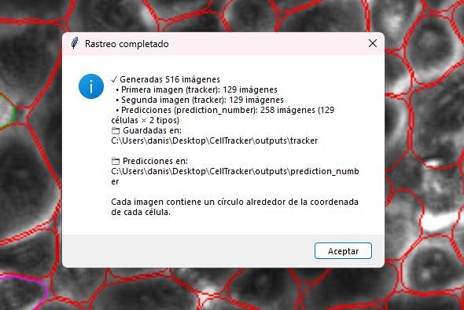
Fig 4.5. Log de confirmación: Generación de 516 muestras de validación.
4.4. Pipeline de Rastreo Célula a Célula
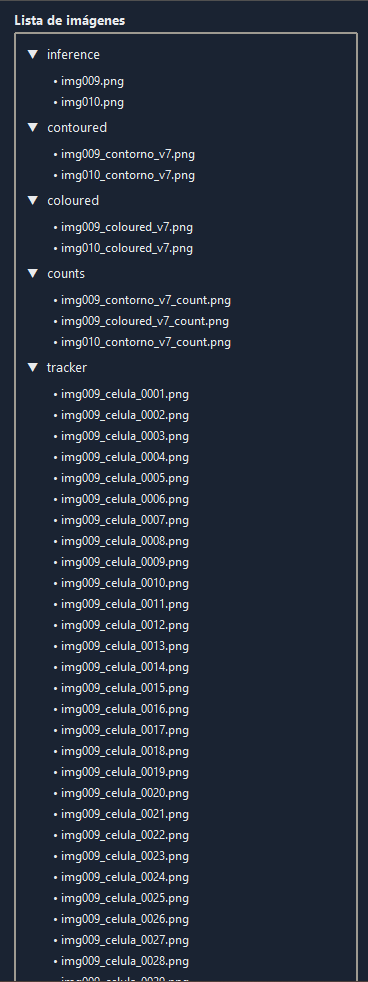
Fig 4.6. Panel de resultados generados por el rastreador.
Orquestación del Rastreo (empezar_rastrear):
Al ejecutarse, el método empezar_rastrear realiza una secuencia crítica
de operaciones:
- Limpieza de Entorno: Se invocan funciones robustas de limpieza
(basadas en
shutil.rmtree) para purgar los directoriosoutputs/trackeryoutputs/prediction_number. Esto garantiza que no se mezclen resultados de ejecuciones previas. - Validación de Entradas: Se verifica la existencia del fichero
JSON (
{orig_stem}__contorno_v7.json) y la imagen de salida (out_path) para ambas imágenes temporales. - Generación Masiva de Micro-Imágenes (Crops):
Este es el paso central del pipeline. El algoritmo recorre el JSON de
predicción,
que contiene las coordenadas de cada célula individual detectada en
$T_0$.
Para cada entrada:
- Se carga la imagen principal completa (la contorneada o coloreada).
- Se dibuja un círculo de resaltado (marcador visual) alrededor del centroide de esa célula específica.
- Se guarda esta imagen modificada como un fichero independiente en
outputs/tracker/.
- Asociación Probabilística: Se ejecuta el módulo
tracker.py, que calcula la similitud probabilística (basada en distancia euclidiana y proporción de área) entre células de $T_0$ y $T_1$, asignando IDs persistentes.
El resultado de este proceso es la lista de archivos de la Figura 4.6: cientos de micro-imágenes que documentan, una a una, cada célula rodeada sobre la imagen original. Este enfoque de "una imagen por célula" proporciona una trazabilidad completa y facilita la revisión manual del rastreo.
El resultado final se visualiza en la Figura 4.7. Ahora, la segunda imagen ($T_1$) muestra las células numeradas. Los IDs asignados corresponden a sus células "madre" en $T_0$, calculados con un margen de confianza o probabilidad de asociación (en este caso, cercano al 85%).
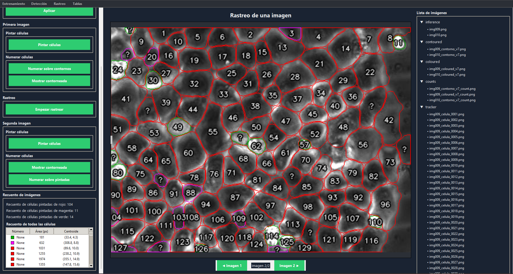
Fig 4.7. Transferencia de IDs a T1 con un 85% de similitud probabilística.
Finalmente, las Figuras 4.8 y 4.9 sirven para la validación comparativa completa. Gracias a que el rastreo ha concluido, ahora es posible visualizar tanto la Imagen 1 como la Imagen 2 con todas sus capas de datos: numeración, contornos vectoriales y máscaras de pintura sólida, permitiendo certificar la consistencia biológica del rastreo.
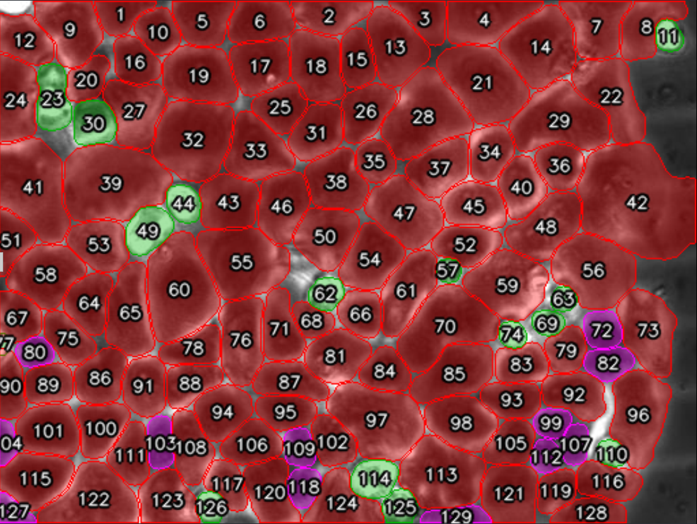
Fig 4.8. Vista completa validada de Tiempo 0.
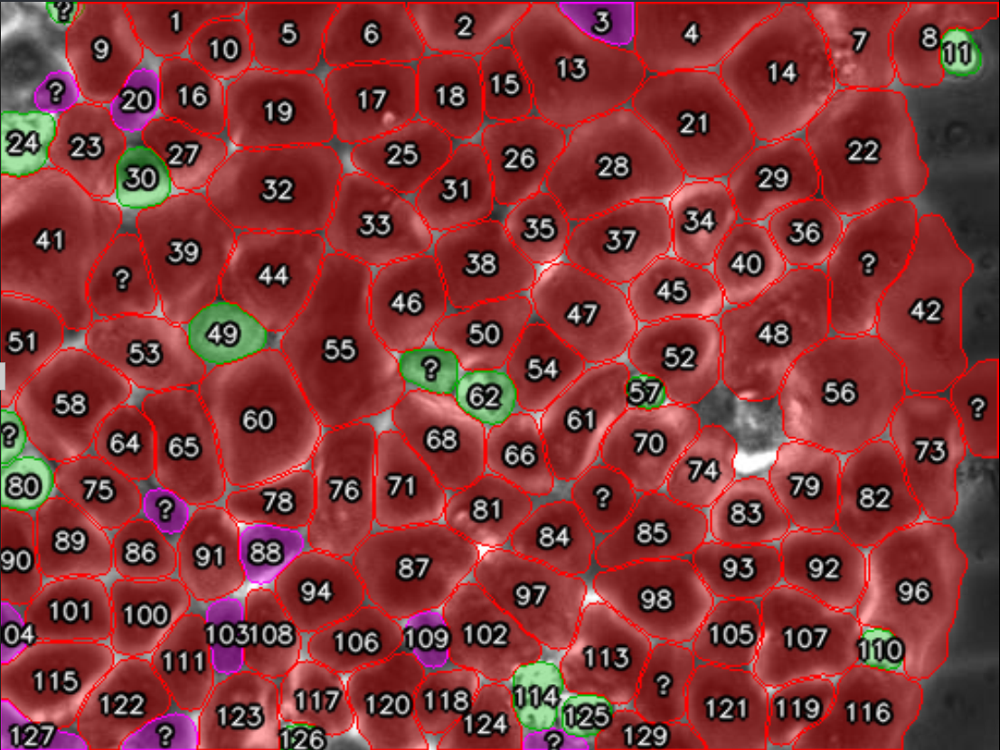
Fig 4.9. Vista completa validada de Tiempo 1.
| Componente | Tecnología Principal | Uso en el Proyecto |
|---|---|---|
| Detección | Ultralytics YOLOv8 | SOTA (State of the Art) en segmentación de instancias en tiempo real. |
| Visión | OpenCV (cv2) | Manipulación de matrices de imagen, dibujo de polígonos y post-proceso. |
| Interfaz | Tkinter / CustomTkinter | Framework nativo de Python para GUIs de escritorio ligeras. |
| Datos | Pandas & NumPy | Manejo de estructuras de datos numéricos y exportación de estadísticas. |